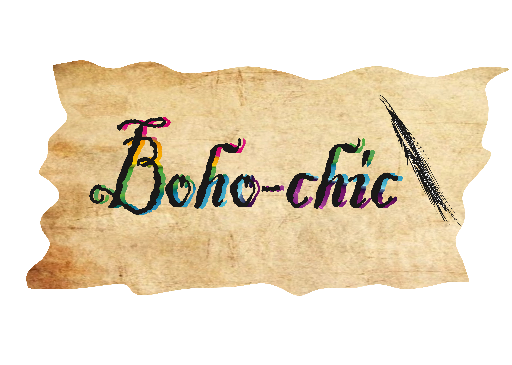
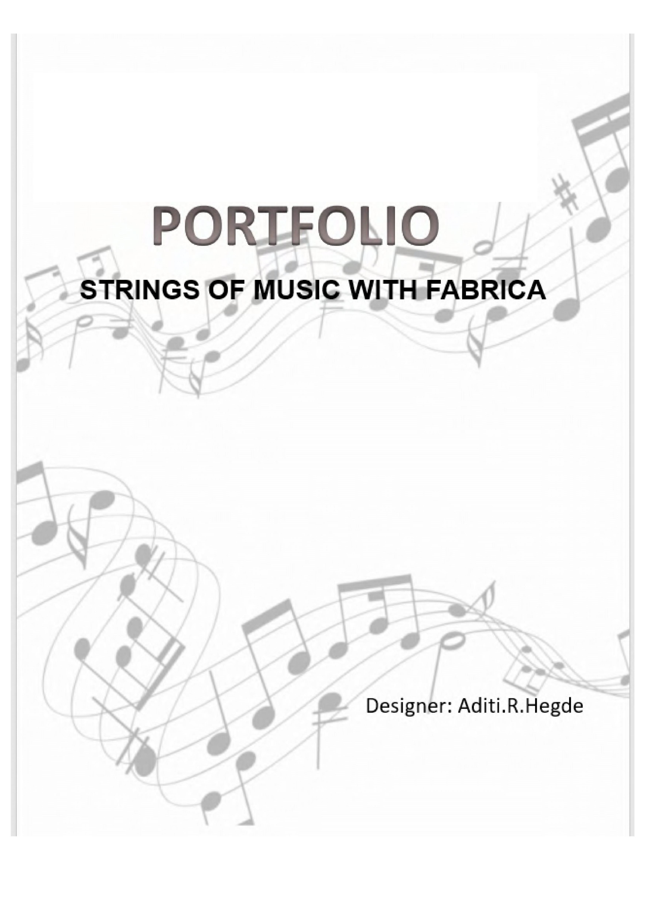
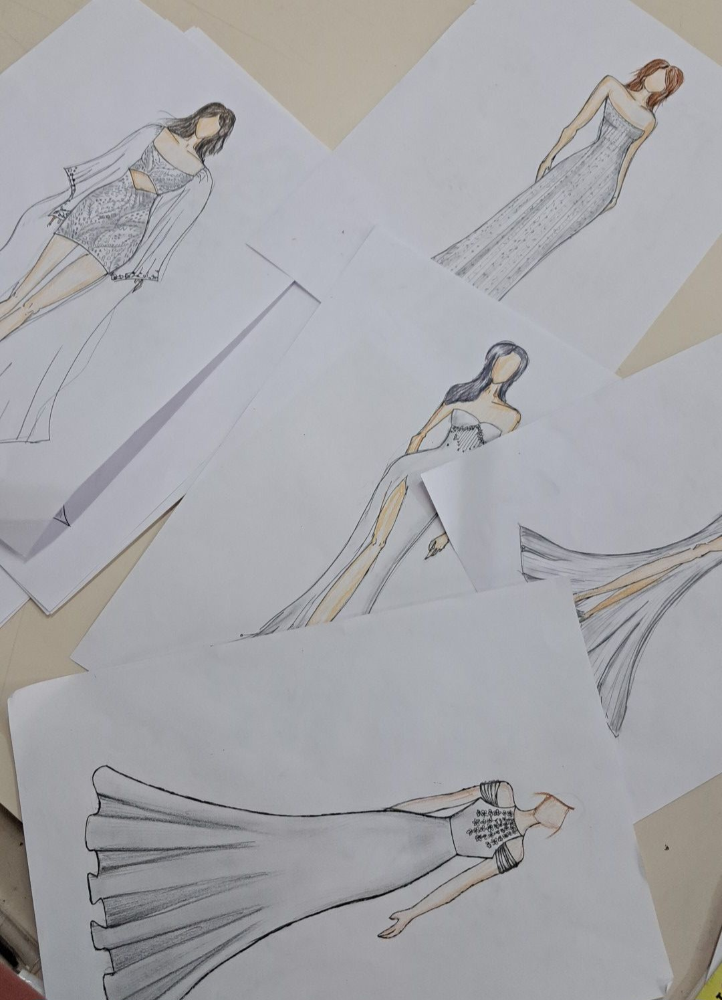
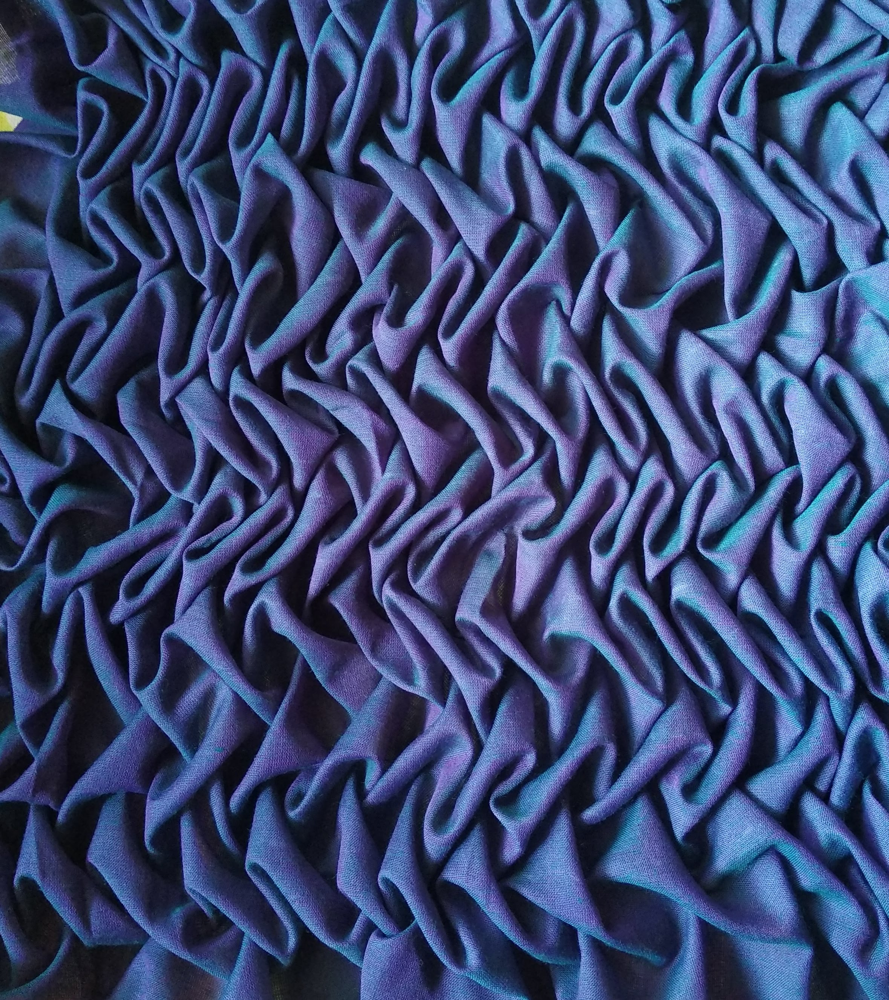
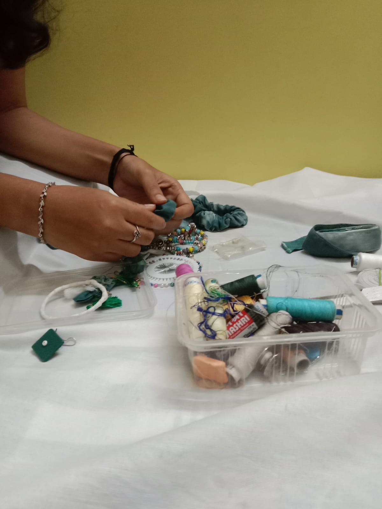

Portfolio
A curated selection of my latest collections


About
I'm a fashion designer with 1–2 years of hands-on experience in turning fabric into stories — sometimes stitched, sometimes digitized. My work blends creative design with technical precision, from surface embroidery techniques like zardozi and aari to digital sketching using Adobe Illustrator, Photoshop, and CLO 3D. I believe good design should feel effortless — though behind the scenes, there's usually a lot of thread, ctrl+z, and coffee involved. My portfolio reflects a mix of clean silhouettes, experimental details, and a growing love for sustainable processes. Still learning, always designing — one stitch (or pixel) at a time
2025
Designed and delivered custom embroidery gowns and veils for private clientele
2024
Joined Finesse INC, Bengaluru, as Assistant Fashion Designer
2023
Joined Avantra by Trends as Junior Designer and managed seasonal collections
2023
Completed MSc in Fashion from Garden City University, Bengaluru
Design Philosophy
"The silhouette begins in silence, where imagination meets the whisper of fabric."

Creative Process
Every design begins with a story. I draw inspiration from art, architecture, and the natural world, translating these influences into wearable poetry through careful sketching and fabric exploration.

Sustainable Materials
I believe in the beauty of responsibly sourced materials. Working exclusively with ethical suppliers, I select fabrics that not only feel luxurious but also respect our environment.

Artisan Craftsmanship
Each piece is a testament to traditional techniques passed down through generations. Hand-sewn details, precise tailoring, and meticulous attention to finish ensure every garment is a masterpiece.